✦ Global explorer · photo stories · research detours
Travel map & photos I took when I wasn’t in them
A single travel page combining the interactive map of countries visited with a personal gallery of landscapes, animals, cities, quiet corners, and funny field notes.
Filter by region, click a marker, or choose a place chip to zoom in.
Map powered by Leaflet and OpenStreetMap. Circle colors follow the region filters.
Photo stories
A pastel-themed slideshow with keyboard, swipe, thumbnail, and play/pause controls.
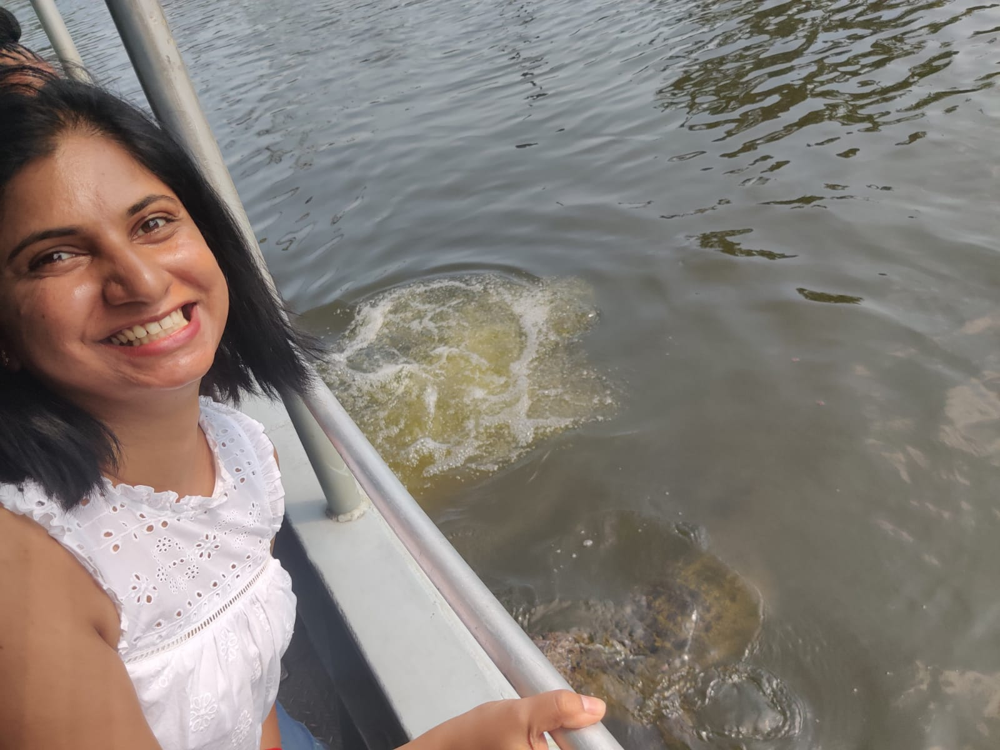
Photo story 01
[Jun'22: New Orleans, USA] It’s that moment when you try to look smiling and friendly while silently screaming, 'Please don’t eat me!' Stress level: Jurassic Park. When our alligator baby chooses me and definitely knows how to say hello. It’s just that its idea of a friendly greeting is to invite me to stick out my hand and get a ‘snappy’ petting session!
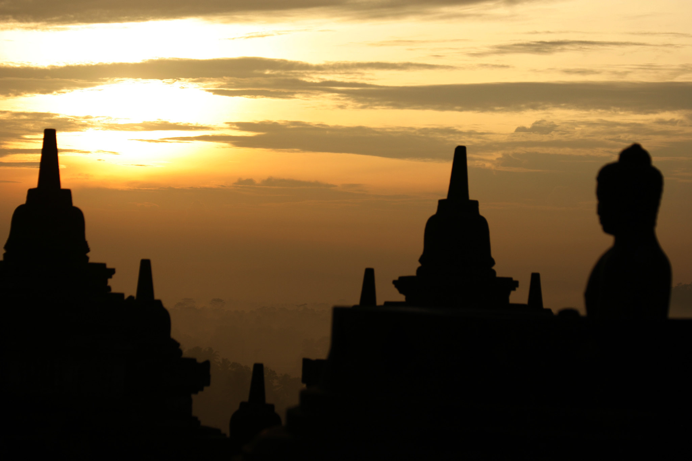
Photo story 02
[Indonesia, Oct'10] Silhouette of Buddha at Borobodur. The image was captured at Sunrise, around 5AM. The Borobodur sunrise tour is something people visiting Indonesia cannot miss. The tranquility it had offered is etched deep in my mind.
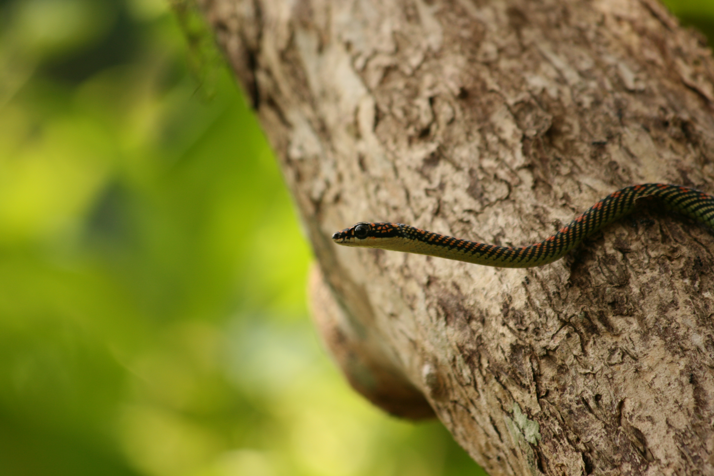
Photo story 03
[Aug'11: Khao Sok National Park, Thailand] Vacationing in Khao Sok was a blast! Our treehouse buddy was this guy—a snake who clearly ran the local branch of a Computer Vision Corp. Just that it was truly my energy minimizing, and a deformable spline like in vision. On the same treehouse as ours it appeared to hold board meetings and the birds gossip about possibly the futility of human existence!
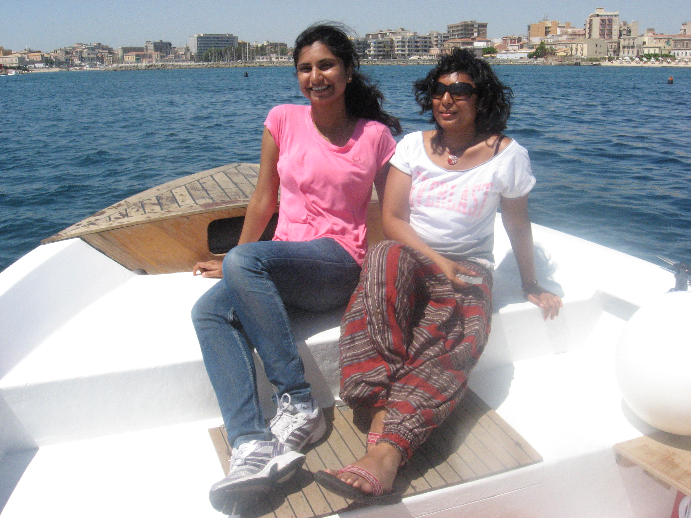
Photo story 04
[Jul'15: Syracruse, Italy], Ah, Cruise in Syracuse: A greek city like town with significant historical roots and Syracuse, the birthplace of Archimedes, where you can almost hear him yelling, "Eureka!". Back in the day, I was as skinny as a Greek godess— well, at least in my dreams. Now, fighting an eternal battle with my waistband. Appears battles are perrenial, for eg., battling for GPUs/space in this wild AI world.
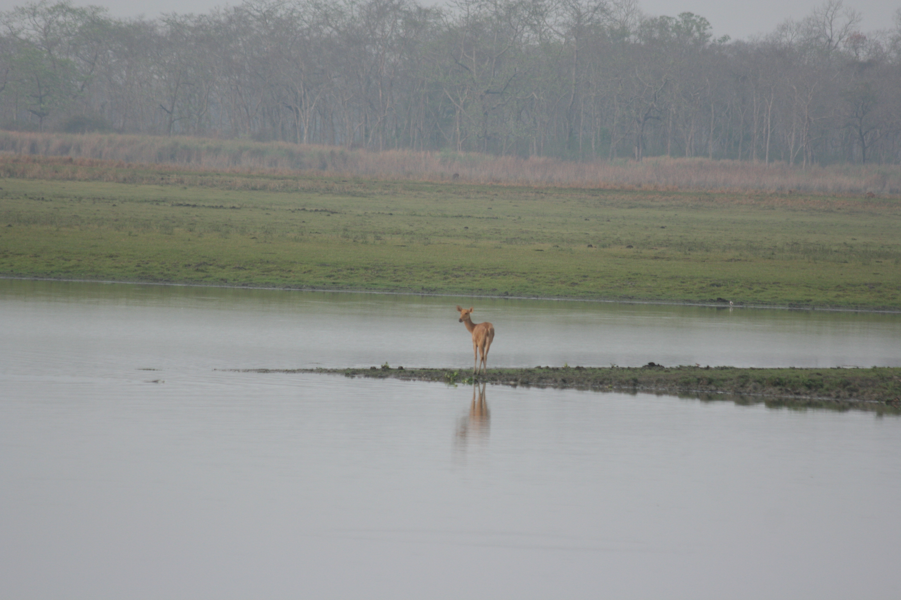
Photo story 05
[Apr'12: Kaziranga National Park, India] In the lush landscape of Kaziranga, a solitary deer stood near the placid lake, feeling a bit like the last guest at a party that ended hours ago. As the sun dipped below the horizon, casting a the deers own shadow over the water, the deer sighed dramatically, thinking, “So, this is what they meant by ‘me-time.’”
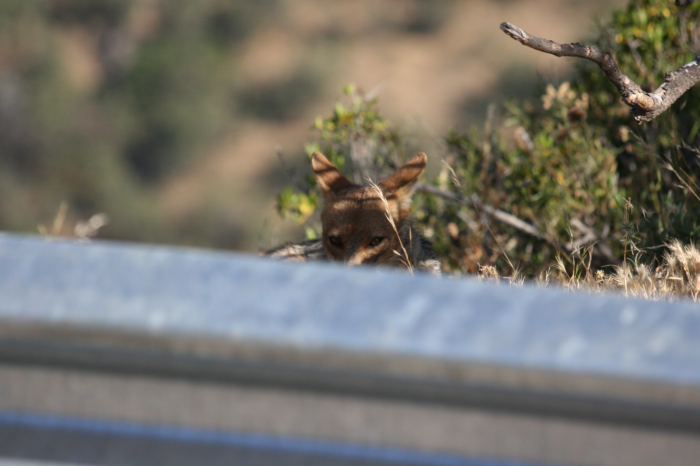
Photo story 06
[Oct'15: Andes mountain range, Chile, South America] Andes's most elusive runway model is this fox. The Andean fox sports a dense, chic reddish-brown coat and thrives in various environments—unlike us, who demand AC and heating even when the weather is perfectly fine. Who's the real adaptable creature here? Foxes in Chile are like expert ninjas—they’re elusive, often vanishing into thin air. But wave around some food, and suddenly they become as common as WiFi in a coffee shop!
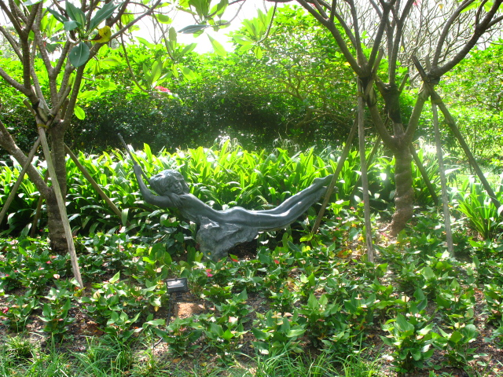
Photo story 07
[Oct'09: Botanical gardens, Singapore] As you lounge in your royal hammock, with grace and in a state of ultimate relaxation. Here's to a day full of gentle breeze, zero mosquito bites in SG humid weather, and endless hammock-time dreams.
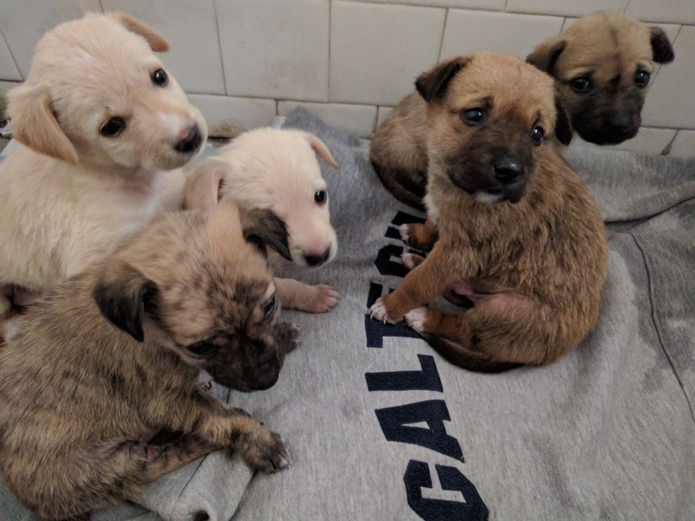
Photo story 08
[Dec'16: Pepsi's kids, Delhi] So what if the mom died....how can we let these cute puppies die without food. Thanks to god for giving me wisdom to keep them warm and greateful for giving them life. Caltech hoodie put to some use.
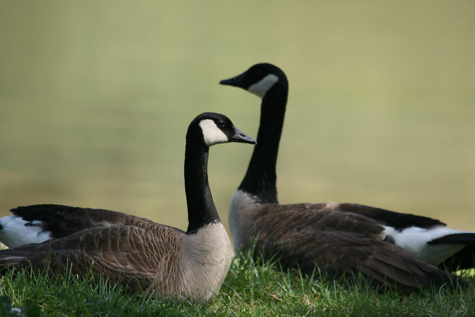
Photo story 09
[Mar'18:Canada Goose, Santa Rosa, USA] Geese aren't plain interested to pose - bad subjects!! they are
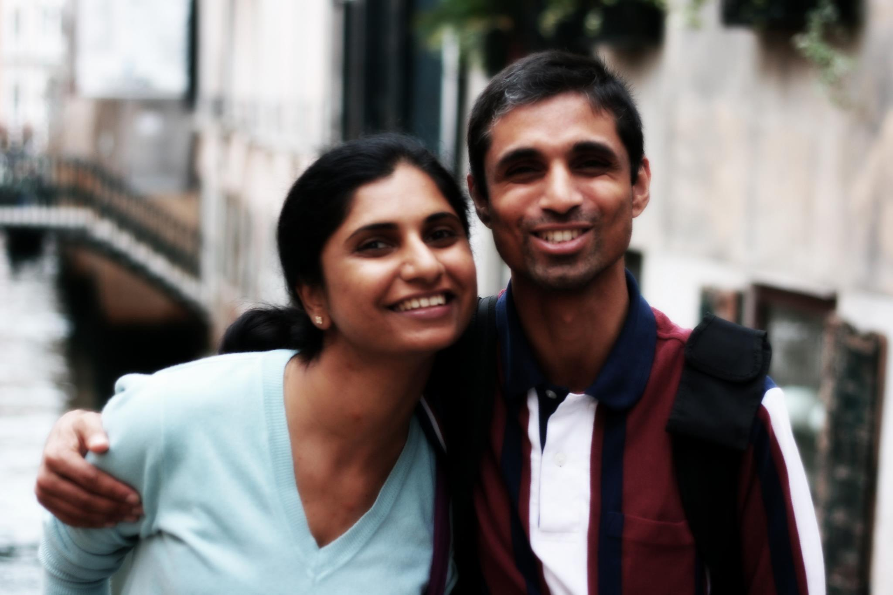
Photo story 10
[Venice] Us, struck by Fernweh
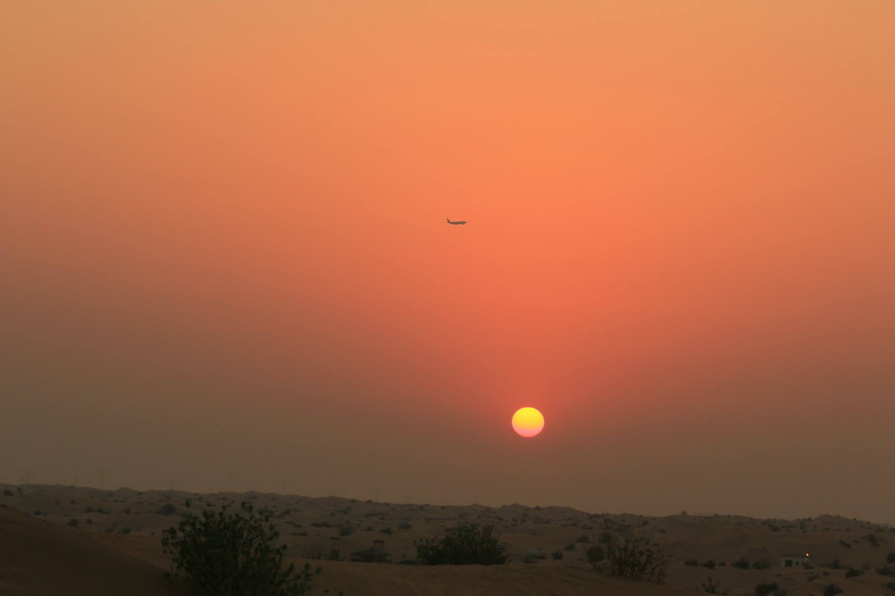
Photo story 11
[Oct'16, Dubai] Deep in thought as the jet and the sunset are engaged in a mesmerizing dance, making me a luckiest passenger on earth.
Photo story 12
[Cork, Ireland'12] View behind our home.
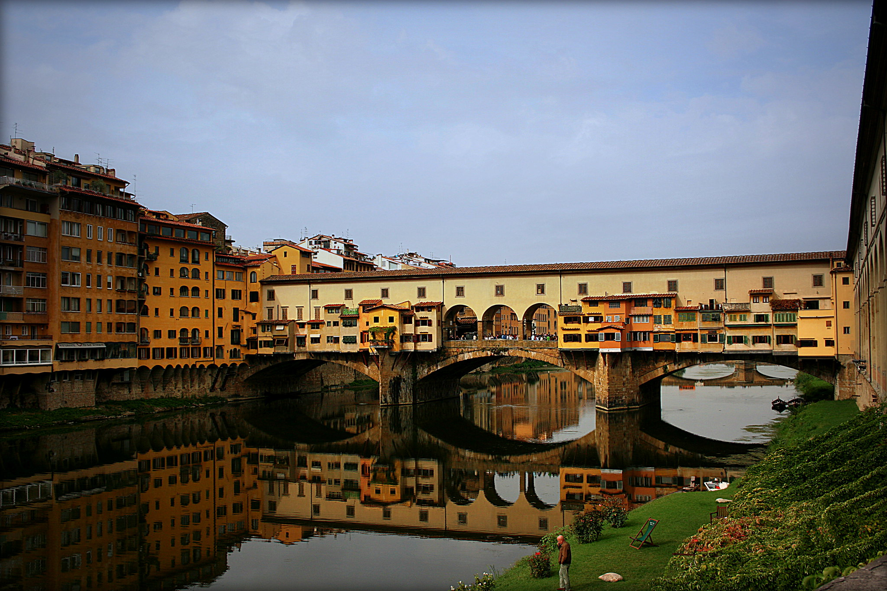
Photo story 13
[Oct'12, Florence Italy] PonteVechhio, (built 1345) this medieval stone bridge, hosts goldsmiths and jewelers, creating a vibrant atmosphere. Its picturesque views of the Arno.
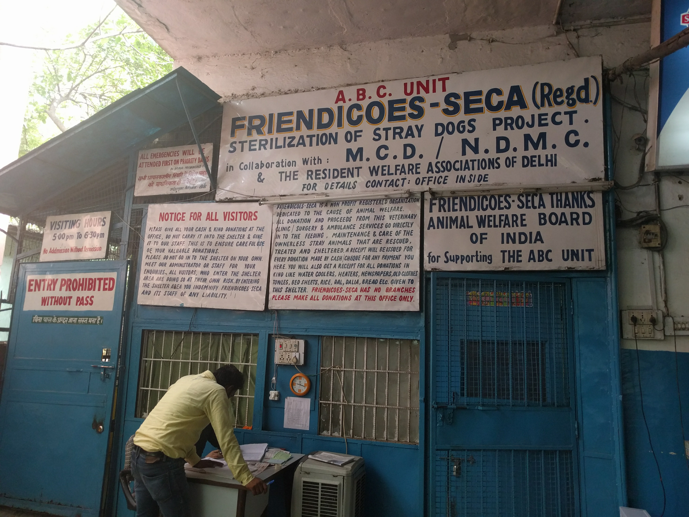
Photo story 14
[Frendicoes, Delhi] Frendicoes Animal Shelter in Delhi is a haven for rescued animals, offering them safety, care, and a second chance at life. Now shouldn't we be thinking of a more humane society for all living beings.
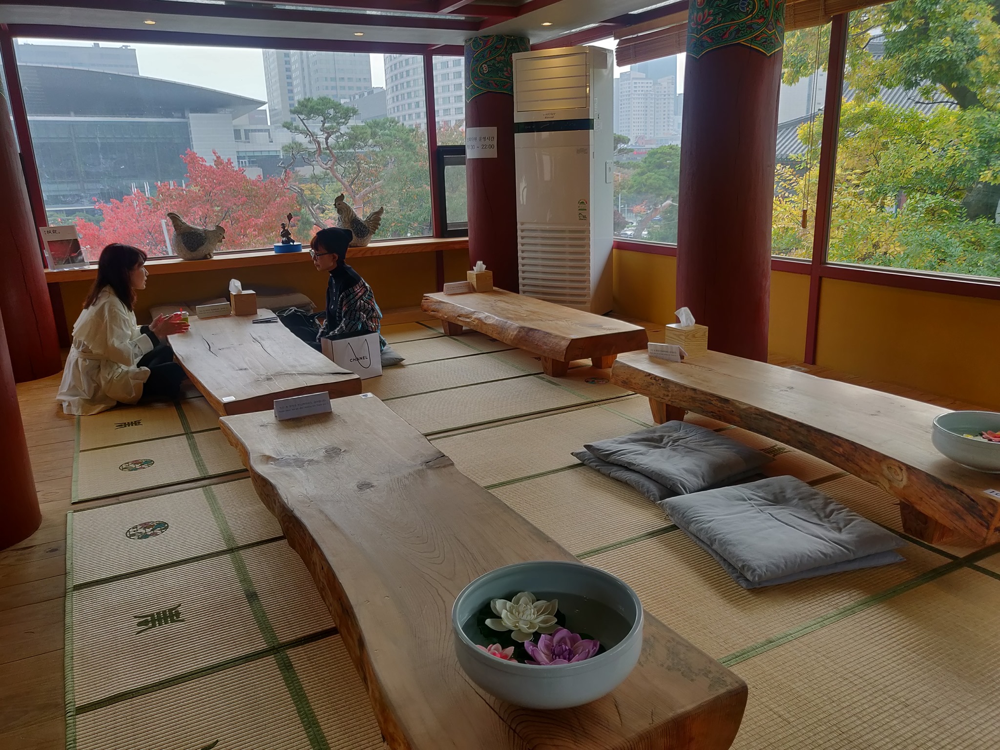
Photo story 15
[Oct'19, Korea] Da-Seon (Tea Ceremony). It is one of the meditations to practice of mindfulness and concentration through brewing and drinking tea, Korea
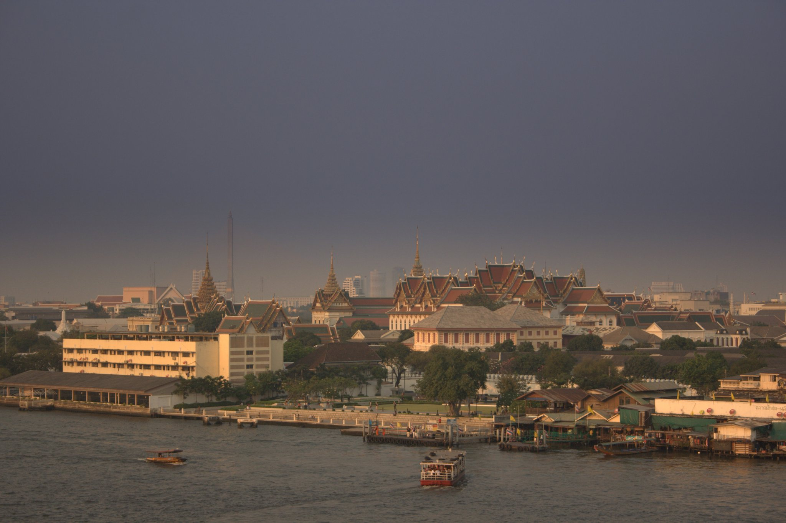
Photo story 16
[Oct'11, Thailand] The Grand Palace across Chao Praya river, Bangkok
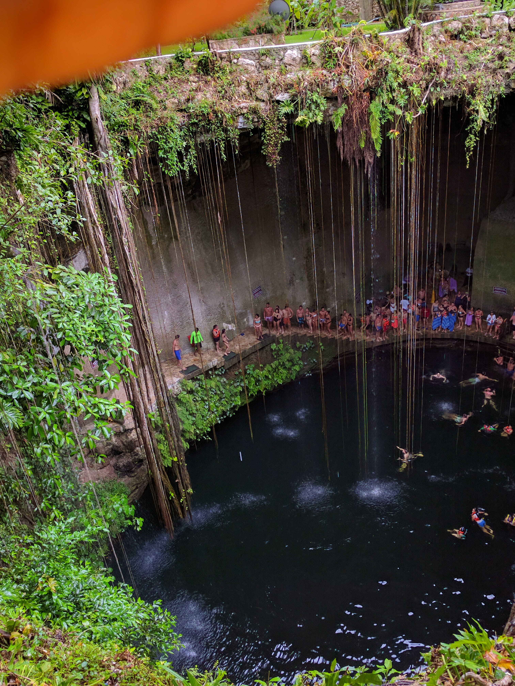
Photo story 17
[Ceynote, Mexico] When you lack the courage to plunge into the refreshing waters, but you flaunt on a feed some adventure! So instead, you strategically position yourself at the edge, snapping epic photos that scream “I’m adventurous!” while I'm secretly plotting your escape route back to dry land.
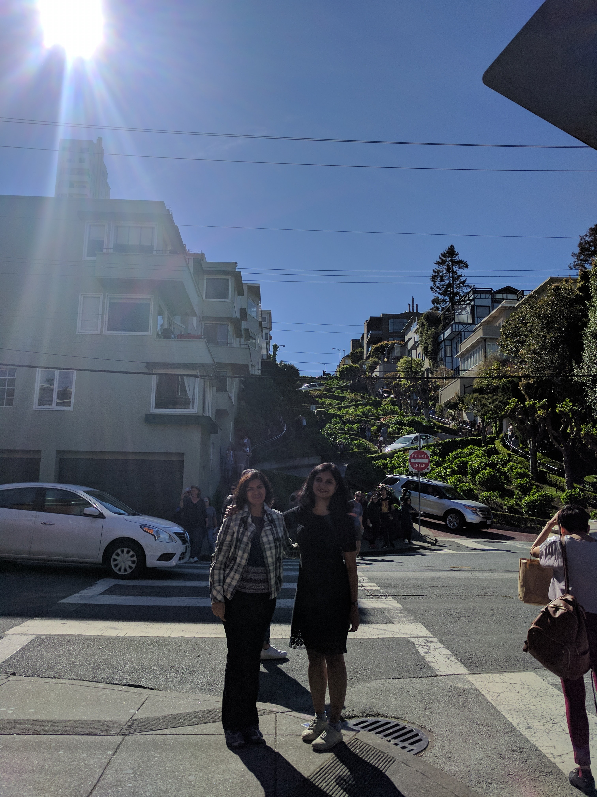
Photo story 18
[Mar'17: San Francisco] On the way to Vedanta Society of Northern California, SFO, USA